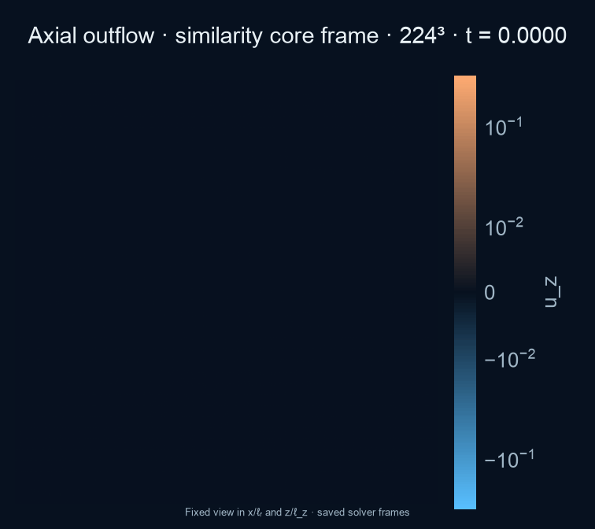

The equations · the proof · the experiment
From smooth flow
to a singularity.
The same equations that help us understand air and water raise a surprisingly basic question: can a perfectly smooth flow develop infinite speed in finite time? OpenAI published a mathematical construction addressing that question. This project explores its concentrating flow with a numerical solver.
Watch the current simulationWhy Navier–Stokes matters
Navier–Stokes expresses Newton’s laws for a continuous fluid: motion changes as momentum is transported, pressure pushes, and viscosity smooths velocity differences. These equations underpin models of aircraft aerodynamics, weather, and blood flow.
The mathematical challenge is whether that smoothing always prevents a three-dimensional flow from losing its regularity. A singularity marks a limit of the mathematical description; it does not mean real water reaches infinite speed. Background ↗
What OpenAI showed
On September 8, 2026, OpenAI released an analytical proof and a Lean formalization. The published theorem ↗ constructs a three-dimensional, incompressible flow that starts at rest: under a specially constructed external force that stays smooth, its peak speed becomes unbounded as a finite time approaches, while total kinetic energy remains bounded.
This is a specially forced counterexample. It establishes the breakdown alternatives C and D in Clay’s formulation ↗; it does not establish blowup for unforced Navier–Stokes or say that ordinary flows must become singular.
Why simulation is different
Here, PhiFlow advances velocity on a finite grid. We choose a target inspired by the proof and calculate the force needed to make it satisfy the discretized momentum equation. This manufactured solution lets us test whether the solver tracks the target and see how its geometry evolves.
Every run stops before the proposed singular time. A rising peak or a dramatic movie cannot establish infinite speed: grid spacing, timesteps, and the chosen force all affect the result. The useful evidence is how errors and resolved scales change under refinement. Numerical checks ↗
How can speed diverge while energy stays finite?
Energy depends on speed squared integrated over volume. In the paper, the region of intense motion shrinks quickly enough for its energy to decrease even as its speed grows. Near the center, fluid spirals inward and exits along the axis; the core becomes progressively thinner relative to its height.
The hard part is keeping the applied force smooth all the way through the singular time. The paper uses oscillatory pulses and successive corrections to cancel otherwise singular terms in the momentum balance. Our finite pulse families and numerical forcing do not reproduce or certify that entire construction. Tracking the target is a solver check; proving those cancellations is a separate mathematical task.
Paper: Theorem 1.1 & §2 ↗ Lean formalization ↗ What reproduction would require ↗
Best complete start-from-rest run
224³ from rest.
Zero velocity and zero force through t = 0.55; smooth forcing then drives the concentrating flow through t = 0.992.
Grid: 224 × 224 × 224 · 11.24 million cells
Saved solver frames only · initial rest interval shortened
- Peak speed
- —
- Peak vorticity
- —
- Smallest scale
- —
Loading run record…
Finite manufactured-solution experiment—not an independent proof.
Core-frame axial outflow
Signed vertical velocity in similarity coordinates, so concentration remains visible as the physical core contracts.

{kind=link}
Speed
Velocity magnitude
{kind=link}
{kind=link}
Vertical velocity
Signed u_z
{kind=link}
{kind=link}
Plane-normal vorticity
ωᵧ in the vertical slice · ω_z in the equatorial slice
{kind=link}
{kind=link}